본 공지사항에서는 각 거래소/증권사/브로커 별 API 발급 방법을 안내하겠습니다.
✅ API가 뭔가요?
API는 Application Programming Interface의 줄임말로, "서로 다른 프로그램끼리 정보를 주고받게 해주는 중간 통로" 역할을 합니다.
예를 들어, 저희 자동매매 프로그램은 바이낸스 거래소에 데이터를 요청하여 BTC 선물의 현재 가격을 조회하고, 그 가격이 $90,000 이하이면 0.002BTC만큼 롱 주문을 넣는 프로그램이라고 가정해봅시다.
그렇다면 저희는 두 가지 기능이 필요합니다.
① 바이낸스 거래소에 BTC 선물 가격 데이터를 수신하는 기능
→ 이런 경우 바이낸스 거래소가 저희에게 데이터를 주게 됩니다
② 바이낸스 거래소에 BTC 0.002개 분량의 롱 주문을 넣는 전송하는 기능
→ 이런 경우 저희가 바이낸스 거래소에게 주문 정보를 주게 됩니다
이렇게 서로 다른 두 프로그램이 정보를 주고받을 때 API를 통하여 주고받게 되어있으며 데이터를 어떤 형식, 규격으로 주고받을지도 정해져 있습니다.
✅ API Key, Secret Key를 왜 전달해드려야 하나요?
API를 통해서는 시세조회 뿐 아니라 주문을 넣는 기능 등 수많은 것들이 가능합니다. 이런 API에 아무나 접근할 수 있다면 안 되겠죠?
그렇게 되면 의뢰자님 계정에 아무나 BTC 롱 주문을 넣어버릴 수 있을테니까요.
이를 방지하기 위하여 거래소/증권사/브로커들은 사용자에게 API를 제공할 때 고유한 API Key와 API Secret Key를 제공합니다.
이는 API를 통해 사용자의 계정에 접근하기 위한 ID와 비밀번호와 같은 개념입니다.
보안을 위해 일부 거래소에서는 API Key, API Secret Key와 더불어 Passphrase라는 하나의 비밀번호를 더 제공하기도 합니다.
의뢰자님께서는 거래하시려는 거래소/증권사/브로커에 접속하시어 API 사용권한을 요청하시고,
그 결과로 만들어진 API Key, API Secret Key, (존재하는 경우) Passphrase를 제게 전달해 주셔야 자동매매 봇에 해당 정보를 입력하여
정상적인 API 인증을 통한 자동매매 구축이 가능합니다.
✅ API Key, Secret Key를 전달해드려도 보안엔 문제가 없나요?
네 없습니다.
그럴 일 없겠지만, 만약 제가 나쁜 마음을 먹는다면 의뢰자님의 API Key와 API Secret Key를 가지고 있으면 계좌 잔고 조회, 현물/선물 주문까지는 이론적으로 가능합니다.
하지만 제가 API 정보를 가지고 있다고 해도 의뢰자님 계좌나 지갑에서 다른 곳으로 출금(Withdrawal)하는 것은 물리적으로 절대 불가합니다.
자동매매 봇은 API 권한 중 정보 조회, 현물 주문, 선물 주문만을 사용하므로 출금 관련된 권한을 모두 막아두시면 API 정보를 알더라도 자산에 피해가 갈 가능성은 거의 제로입니다.
또한, API는 언제든 삭제하고 API Key와 Secret Key를 초기화한 상태로 다시 발급할 수 있기 때문에 이상하다 싶으시면 언제든지 API는 사용중지가 가능합니다.
여태까지 보안 관련된 사고 0건이며, 제가 API 정보를 사적 유용하지도, 다른 곳에 공유하지도 않으니 걱정 안하셔도 됩니다.
BINANCE 거래소
① 바이낸스 거래소 공식 사이트(https://www.binance.com/en) 접속
② 로그인
③ 메인페이지 > 사람 모양 아이콘 > Account 클릭
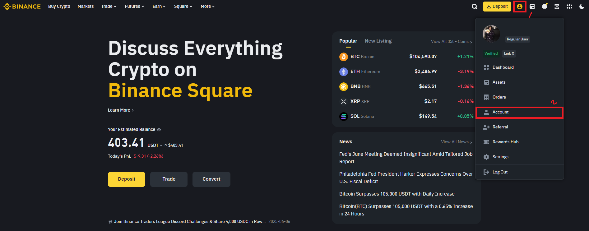
④ API Management 클릭 > Create API 클릭 > System Generated 클릭
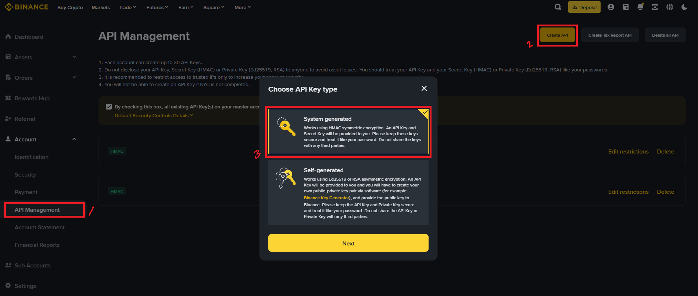
⑤ API의 이름을 원하는 이름으로 지정 > 인증 절차 진행 > API 생성 완료
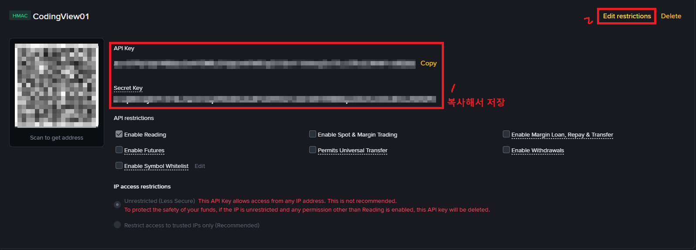
여기까지 하시면 API가 생성되어 고유한 API Key와 Secret Key가 발급된 상태입니다.
이때 API Key와 Secret Key를 복사하여 메모장 등에 저장해주세요. 특히 Secret Key는 추후에 열람하는 것이 불가하므로 그 값을 반드시 어딘가에 백업해두셔야 합니다.
⑥ Edit Restriction 클릭 > Restric access to trusted IPs only (Recommended) 선택 > 192.168.0.1 입력 > Confirm
* Restric access to trusted IPs only 부분의 192.168.0.1는한 것은 임시로 지정한 값입니다. 나중에 클라우드 봇 등의 IP 주소가 확정되면 실제 값으로 교체해주셔야 합니다.
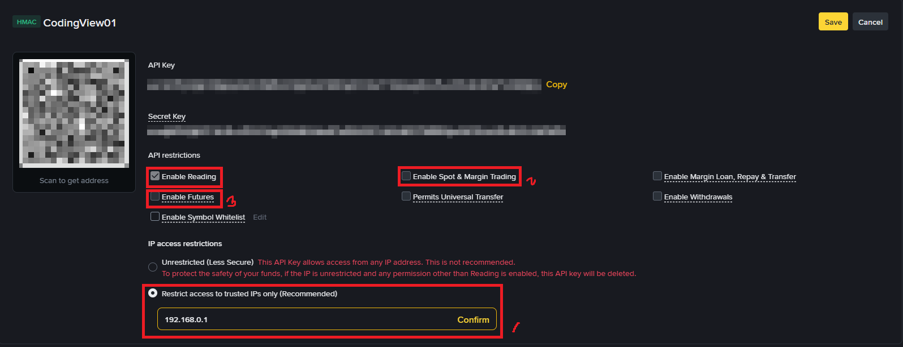
⑦ Enable Reading, Enable Spot & Margin Trading, Enable Futures 세개만 활성화하고 나머지 모두 비활성화
* 주의: Permits Universal Transfer와 Withdrawals는 송금 및 출금 관련 옵션이므로 반드시 체크 해제해주세요.
⑧ 오른쪽 위의 Save 버튼 눌러서 저장
OKX 거래소
방법은 바이낸스 거래소의 API 발급방법과 유사하며, 세부적인 단계는 아래 링크 참고 부탁드립니다.
🚀 OKX 거래소 API 발급방법 설명글
위 과정을 수행한 뒤 제게 API Key, API Secret Key, Passpharse를 전달해주시면 됩니다.
BYBIT 거래소
방법은 바이낸스 거래소의 API 발급방법과 유사하며, 세부적인 단계는 아래 링크 참고 부탁드립니다.
🚀 BYBIT 거래소 API 발급방법 설명글
위 과정을 수행한 뒤 제게 API Key, API Secret Key를 전달해주시면 됩니다.
BITGET 거래소
방법은 바이낸스 거래소의 API 발급방법과 유사하며, 세부적인 단계는 아래 링크 참고 부탁드립니다.
🚀 BITGET 거래소 API 발급방법 설명글
위 과정을 수행한 뒤 제게 API Key, API Secret Key, Passpharse를 전달해주시면 됩니다.
BINGX 거래소
① 빙엑스 거래소 공식 사이트(https://bingx.com/en/) 접속
② 로그인
③ 메인페이지 > 사람 모양 아이콘에 커서 올리기 > API Management 클릭
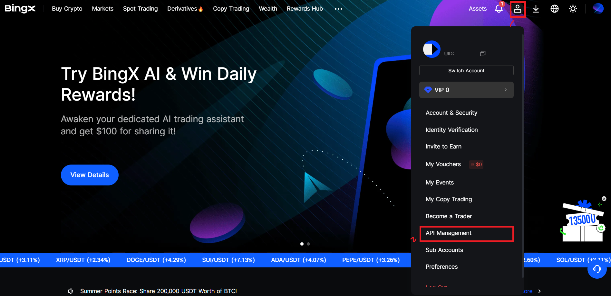
④ Create API > 이름 지정 > Read, Spot Trading, Perpetual Futures Trading 세 개만 켜고 나머지 체크 해제 > IP Adress Whitelist에 192.168.0.1 입력 > Confirm > 인증 진행
* Restric access to trusted IPs only 부분의 192.168.0.1는한 것은 임시로 지정한 값입니다. 나중에 클라우드 봇 등의 IP 주소가 확정되면 실제 값으로 교체해주셔야 합니다.
* 주의: Permits Universal Transfer와 Withdraw는 송금 및 출금 관련 옵션이므로 반드시 체크 해제해주세요.
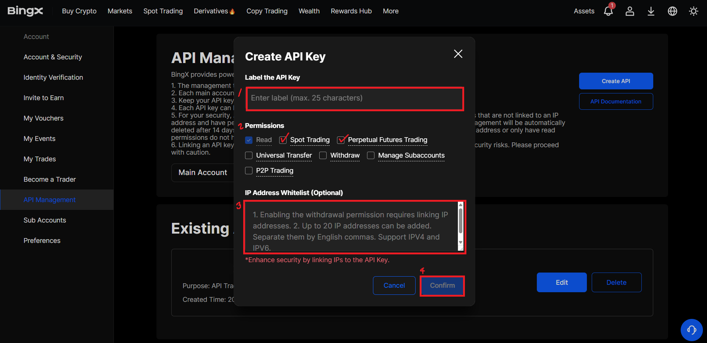
⑤ 생성된 API의 API Key와 Secret Key를 복사해서 저장 > CodingView에게 전달
* Secret Key는 추후에 열람하는 것이 불가하므로 그 값을 반드시 어딘가에 백업해두셔야 합니다.
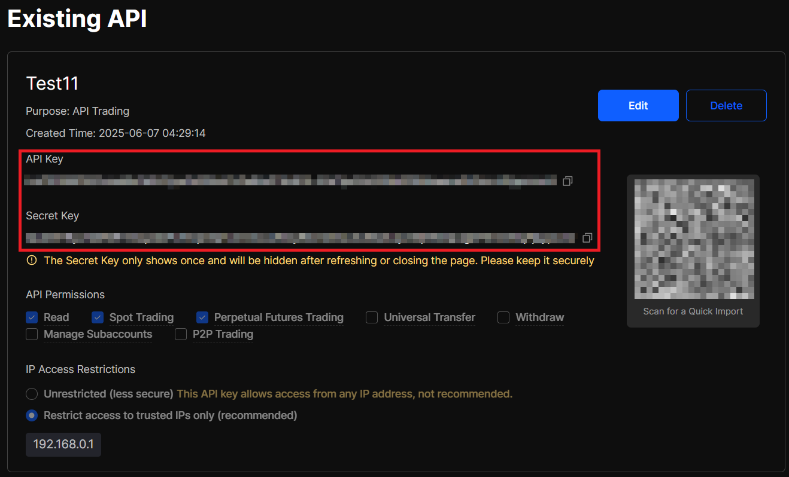
업비트 거래소
방법은 바이낸스 거래소의 API 발급방법과 유사하며, 세부적인 단계는 아래 링크 참고 부탁드립니다.
🚀 업비트 거래소 API 발급방법 설명글
위 과정을 수행한 뒤 제게 API Key, API Secret Key를 전달해주시면 됩니다.
빗썸 거래소
방법은 바이낸스 거래소의 API 발급방법과 유사하며, 세부적인 단계는 아래 링크 참고 부탁드립니다.
🚀 빗썸 거래소 API 발급방법 설명글
위 과정을 수행한 뒤 제게 API Key, API Secret Key를 전달해주시면 됩니다.
한국투자증권
세부적인 단계는 아래 링크 참고 부탁드립니다.
🚀 한국투자증권 API 발급방법 설명글
위 과정을 수행한 뒤 제게 APP Key, APP Secret Key를 전달해주시면 됩니다.
* 위 포스트 내에서 APP Key와 APP Secret을 발급받는 부분까지만 따라하시고, 이후 과정부터는 하지 않으셔도 됩니다.
키움증권
① 키움증권 REST API 사이트 접속 > 우측 상단의 'API 사용신청 클릭' > 로그인
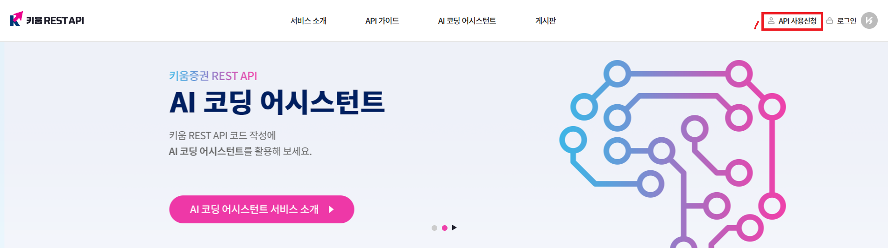
② API 신청/해지 탭 > 이용약관, 개인정보 이용정책 및 필수동의사항 동의 > 신청하기
* 키움증권의 API 발급은 07:00부터 22:00까지만 가능합니다.
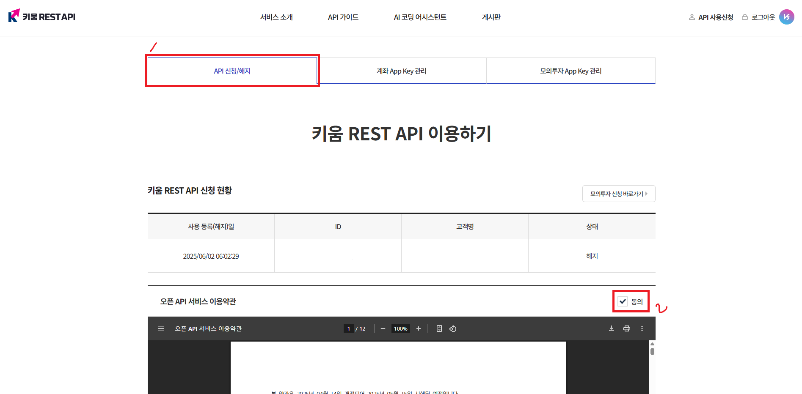
③ 계좌 App Key 관리 탭 > 계좌 등록하기 > 계좌 선택 후 비밀번호 입력 > 모바일 인증 > 등록 완료
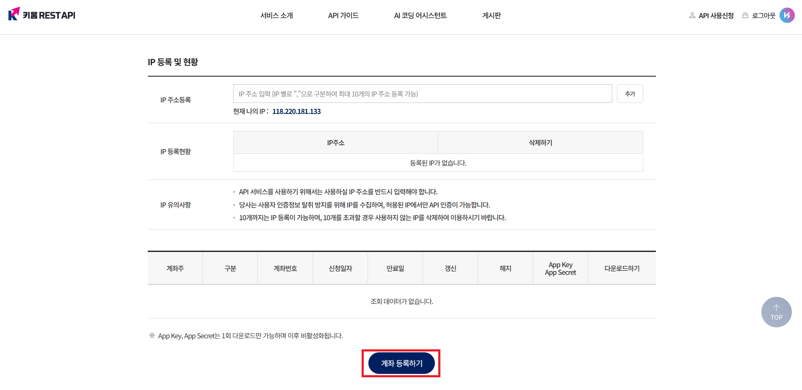
④ 등록이 완료되면 옆의 '다운로드' 버튼을 통해 APP Key와 APP Secret Key를 각각 다운로드 > 다운로드 된 메모장 파일을 열면 Key 확인 가능
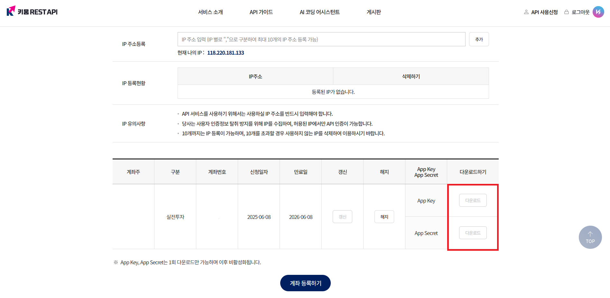
위 과정을 수행한 뒤 제게 APP Key, APP Secret Key를 전달해주시면 됩니다.
CoinMarketCap(코인마켓캡)
① 코인마켓캡 공식 사이트(https://coinmarketcap.com/ko/) 접속
② 로그인
③ 메인페이지 > 사람 모양 아이콘 클릭 > API 클릭
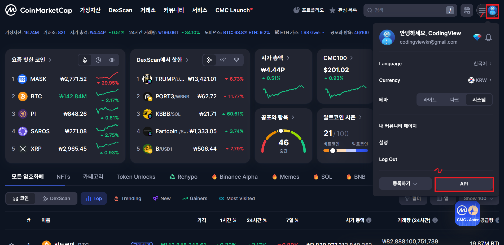
④ Get Your Free API Key 클릭
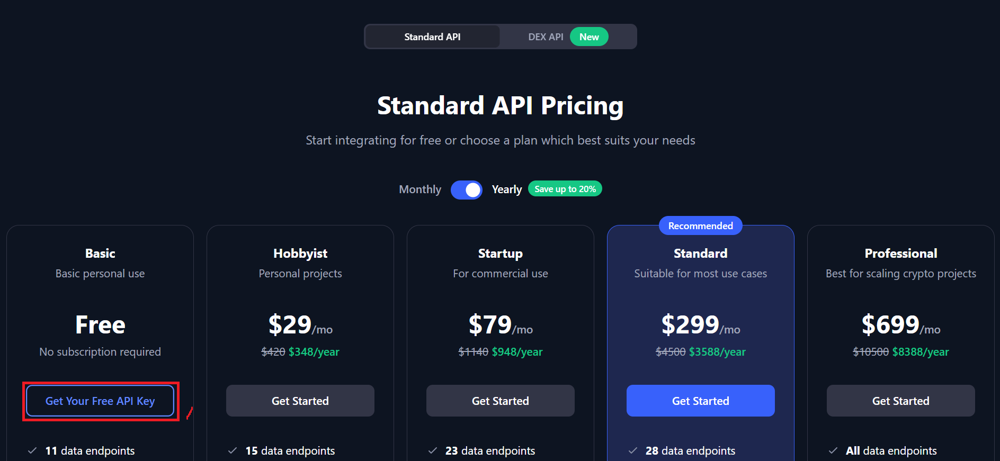
⑤ OVERVIEW > *표시 되어있는 부분에 마우스 커서 올리면 Copy Key 버튼이 보임 > Copy Key
* 코인마켓캡은 API Secret Key와 한 쌍을 이루하지 않고, API Key 단독으로 존재합니다.
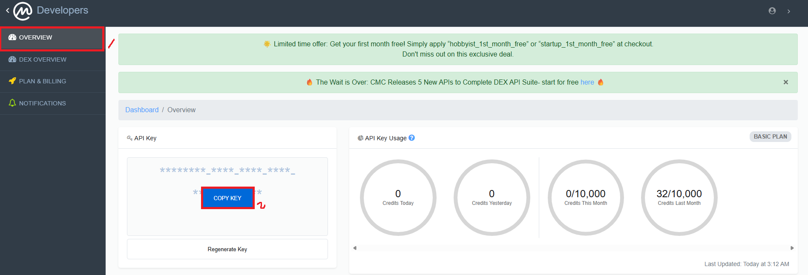
Telegram(텔레그램)
텔레그램의 경우 API를 통해 특정 메세지를 개인DM, 그룹, 채널에 전송할 수 있도록 기능을 제공하고 있습니다.
특정 DM, 그룹, 채널에 메세지를 전송하고자 한다면 API Token과 Chat ID 정보가 필요합니다.
▪️ API Token: 사용자가 제작한 텔레그램 봇마다 하나씩 고유하게 부여되는 API Key입니다. 특정 봇을 통해 메세지를 전송하고자 할 때 사용합니다.
▪️ Chat ID: 특정 채팅방마다 부여되는 ID입니다. 동일한 봇이 여러 채팅방(그룹, 채널)에 들어있는 경우 API Token은 같지만 Chat ID가 다릅니다. 그렇기에 메세지가 전송되기를 원하시는 채팅방의 Chat ID를 공유해주시면 됩니다.
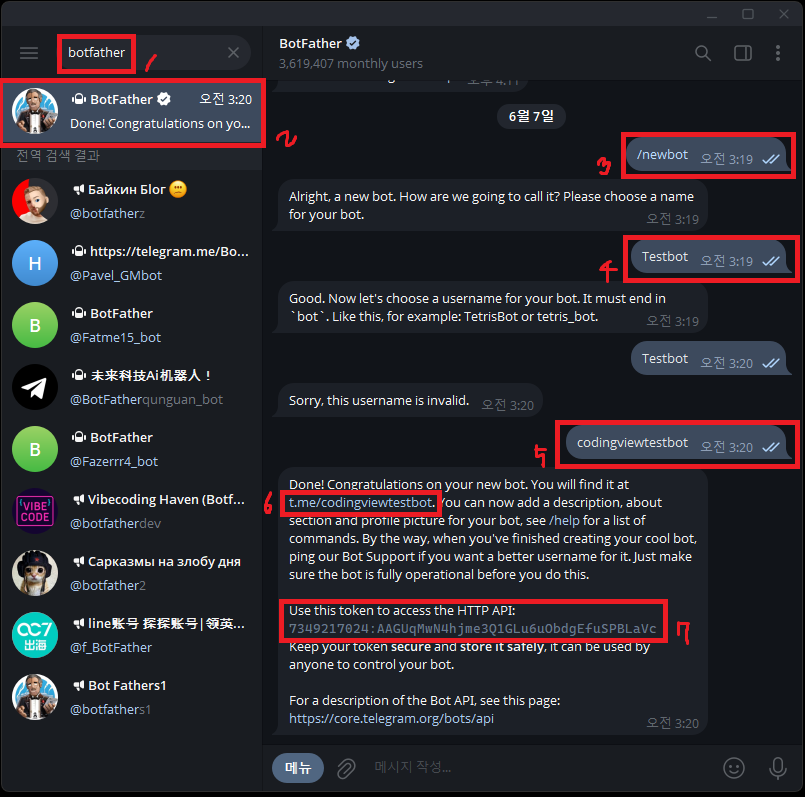
① 텔레그램 실행 > 검색창에 'Botfather' 검색 > 아이콘 클릭해 Botfather와 채팅 시작 > /newbot 입력
② "Alright, a new bot. How are we going to call it? Please choose a name for your bot."라는 채팅에 대한 대답으로 자유롭게 봇 닉네임 지정 (Ex. Test)
③ "Good. Now let's choose a username for your bot. It must end in `bot`. Like this, for example: TetrisBot or tetris_bot."라는 채팅에 대한 대답으로 봇 태그 지정 (Ex. CodingViewBot)
* 봇 닉네임과 봇 태그는 서로 다른 것입니다. 예를 들어 제 텔레그램 닉네임은 CodingView이지만 태그는 @CodingViewKR일 수 있겠죠? 텔레그램 봇도 똑같습니다.
** 닉네임에는 딱히 제한이 없지만 태그의 경우 반드시 'bot'이나 'Bot'이라는 글자로 끝나야 합니다.
*** 태그는 전 세계의 다른 봇과 겹치지 않아야 하기 때문에 겹치는 경우 "Sorry, this username is invalid."와 같은 응답이 오게 됩니다. 이러한 경우 태그를 다르게 바꾸어 다시 전송하면 적용됩니다.
④ "Done!"으로 시작하는 답장을 받으면 그 안에 봇과 채팅할 수 있는 링크, 봇의 API Token이 포함되어 있으므로 이를 각각 복사하여 저장
⑤ "t.me/봇태그"를 클릭해 봇과 채팅을 시작한 후 Hello 등과 같이 아무 메세지나 하나 전송
⑥ (채널이나 그룹에서 메세지를 받고자 하는 경우) 채널이나 그룹을 생성 > 채널 이름 클릭 > 채널 정보 탭 열기 > 구독자 추가 > 봇 태그로 검색 > 봇 추가
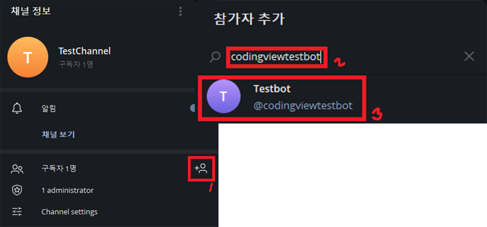
⑦ 채널이나 그룹에 아무 메세지나 입력 > Chrome에서 https://api.telegram.org/bot봇토큰/getUpdates 링크로 접속 > Pretty Print 적용 체크 표시 > "chat" 부분의 "id" 복사해서 저장
* 봇 토큰은 ④번 과정에서 답장으로 온 토큰을 사용, https://api.telegram.org/bot봇토큰/getUpdates라는 링크에서 정확히 "봇토큰"이라는 글자만 답장받은 Token으로 대체
** Chat ID가 음수인 경우 마이너스까지 포함해서 복사
*** 보낸 메세지가 Chrome 창에 뜨지 않으면 F5눌러 Chrome 창을 1회 새로고침 시도
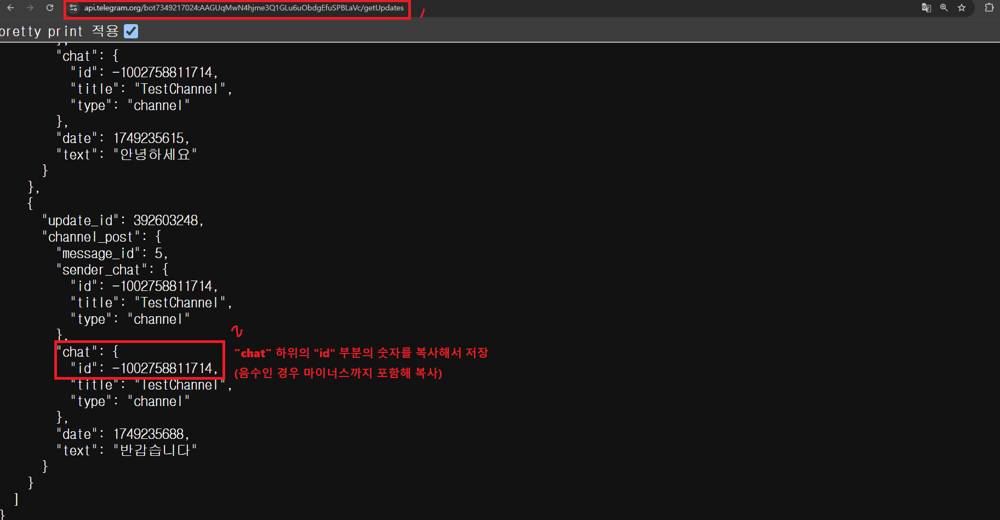
⑧ 이후, 복사한 API Token과 Chat ID를 CodingView에게 전달